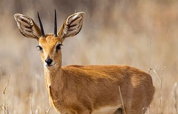

One of the smallest antelope on the property, the steenbok is a solitary, big-eared grazer found in open grassland and light bush. Despite its size, its keen senses and habit of freezing motionless before bolting make it a genuine test of a hunter's eye and patience.
Contact our team of professional hunters to plan your South African adventure.